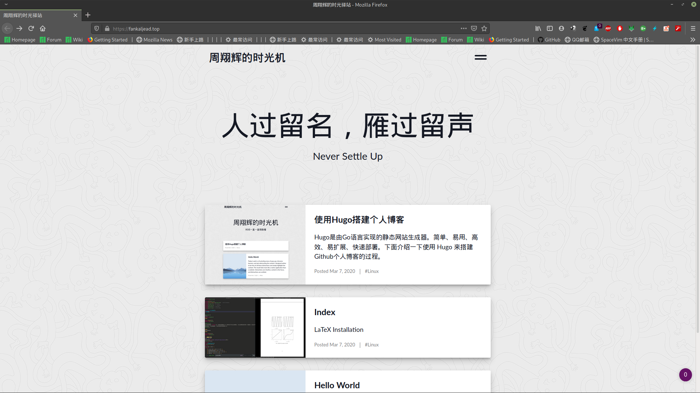

使用Hugo搭建个人博客
Posted

Contents
Hugo是由Go语言实现的静态网站生成器。简单、易用、高效、易扩展、快速部署。 下面介绍一下使用 Hugo 来搭建Github个人博客的过程。
安装 Hugo
- 使用包管理器安装
＃ ArchLinux
$ sudo pacman -S hugo
- 使用源码安装
$ mkdir $HOME/src
$ cd $HOME/src
$ git clone https://github.com/gohugoio/hugo.git
$ cd hugo
$ go install
使用 Hugo 生成站点
使用Hugo快速生成站点，比如希望生成到 /home/zxh/blog 路径：
$ hugo new site /home/zxh/blog
创建文章
例如想要创建一篇post/linux/index 页面
$ hugo new posts/linux/index.md
初始页面包含下列元数据：
title: “index” 标题
date: 2020-03-07T11:26:58+08:00 时间
displayInMenu: false 是否在菜单中显示
categories: [“Web”] 标签或者类别
displayInList: true 是否在列表中显示
draft: false 是否发布
resources: 资源列表
- name: featuredImage
预览图片src: ""预览图片链接params: description: “Description for the featured image, used as the alt text”图片描述
将Hugo Markdown 文章打包成 html文件
$ # aether 是 hugo 的主题， 后面加上 --baseUrl 才会有样式
$ hugo --theme=aether --baseUrl="https://fankaljead.github.io/"
发布到 Github 产生自己的博客
- 进入打包后的
public文件夹中; - 将这个文件夹与 fankaljead.github.io 链接起来
$ git init
$ git remote add origin git@github.com:fankaljead/fankaljead.github.io.git
- git 提交
$ git add .
$ git commit -m "balablala"
$ git push --set-upstream origin master
Bingo
最后可以就看到漂亮的 hugo 博客界面了
